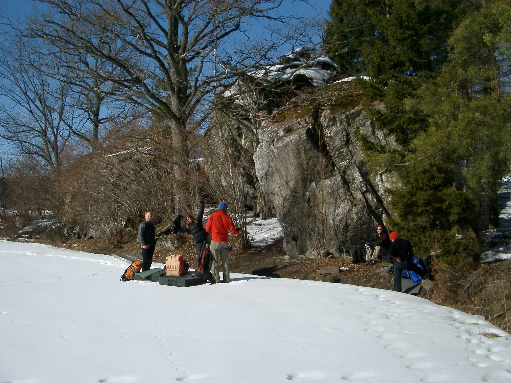

Källberga (bimbo)
Allmänt
Ett ganska nytt område. Bäst i Uppsala om man vill ha många problem av hög kvalitet på samma ställe. Dessvärre kanske inte så stor framtida utvecklingspotential, men ändå; läget, stenkvaliteten, problemstandarden... - åk dit!
Funkar nästa alla årstider, kan vara myggigt. Överlag bra landningar. Bra ställe för den som släpar med sig en barnvagn, hit kommer du även med de trendigaste caffémodellerna.
Förare

//trasig länk//
Ny (2008) boulderförare över Uppsala finns att köpa via uppblocSNABELAgmail.com
Vägbeskrivning
Kör väg 282 mot Almunge. Sväng av första höger efter bensinmacken i Länna (vid tennisplanen). Kör några kilometer längs grusvägen tills skogen upphör och åkrar tar över. Parkera vid mötsplatsen vid blocket på åkern. Blocken ligger i skogskanten. Källberga - åsen är den ås som ligger längs vägen ett par hundra meter innan man kommer fram till åkrarna. Blocken ligger lite spridda uppe på åsen intill vägen.
<div style="width: 300; float: right; margin-left: 0px">
<googlemap version="0.9" lat="59.863479" lon="18.002214" type="map" zoom="14" height="300">
59.859471, 18.005905, Källberga, plan 2
59.865375, 18.001099, Källberga, åsen
</googlemap>
</div>
<googlemap version="0.9" lat="59.868262" lon="17.996292" type="map" height="300">
59.859471, 18.005905, Källberga, plan 2
59.865375, 18.001099, Källberga, åsen
</googlemap>
Sektorer
Åsen
Ligger på åsen bredvid vägen på väg mot Källberga. Öppet och trevligt, med otroligt fin granitkvalitet och mest överhängande problem.
- 1
- Joel Touch
- 6B+
- sittstart, utan arêten (utan den stora listen uppe till höger 6c)
- 2
- Dandy
- 4A
- upp vänster vid granen
- 2
- Lättingen
- 5A
- starta med undercling
- 3
- DKP
- 6B
- sittstart, utan greppen till höger
- 4
- Chief
- 4C
- rakt upp med stora greppen (följ rampen höger och avsluta på slopers 5b)
- 5
- Desperado
- 7A+
- Det nordligaste klättrade blocket på åsen. Sittstart till höger i överhänget.
- 7
- Guldkusten
- 7A+
- Överhängande block ca 50 innanför Desperado. Typ sittstarta vänster arête.
- 7
- Yet another Ricky Brusched
- 5A
- hoppstart
- 8
- Medicinmannen assis
- 6B
- sittstart från stenen med kanten till vänster och pinch på arêten höger
- 9
- Sabotage
- 5C
- sittstart, rakt upp
- 9
- Zulu
- 6C
- sittstart, sedan upp åt vänster
- 9
- Zulu eliminate
- 6C+
- sittstart med enbart den lägsta hyllan, sedan via sloper upp vänster
- 10
- -
- 6A
- sittstart, rakt upp
- 10
- -
- 6A+
- sittstart, upp åt vänster
Huvudområdet
-
- På Morfars begäran hade jag skite ner mig
- 6A
- Hög slab (Niklas slab) på baksidan av block nummer två. Lång sträckning i början därefter vidtar ett litet krux som motiverar Pyrets uttalande i problemnamnets Teratologencitat.
-
- Kalypso
- 5C
- The highball to the right of Snowball. Follow the crack to the top.
- 1
- Snowball
- 5C
- Hög vägg på första blocket. Högerinsteg med krimpar är 6b+
- 2
- Shadow ss
- 6B
- Väggen mot vägen på första blocket, sittstart till vänster inne i diedret med de lägsta greppen, gå ut mot hyllan.
- 2
- Shadow
- 5A
- upp på sva vid den stora hyllan
- 3
- Perlon
- 6B
- Väggen mot vägen på första blocket, sittstart mitt i överhänget vid jug, klättra rakt upp.
- 4
- Simulacrum
- 6B+
- Väggen mot vägen på första blocket, sittstart höger och klättra upp till juggar på arêteformationen.
- 4
- Simulacrum vänster
- 6C+
- Start som simulacrum men gå upp åt vänster till incuts på sva utan juggarna på arêten.
- 5
- Källbergatraversen
- 7A
- Överhänget på första blocket, sittstart längst höger och traversera vänster till stora hyllan och toppa ur.
- 7
- -
- 4A
- sittstart med stora hyllan, rakt upp
- 7
- Pang På
- 6A
- sittstart vänster om hyllan, sedan upp vänster utan hyllan
- 8
- Leca
- 4B
- sittstart, rakt upp
- 9
- Svalan traversen
- 7A
- Tunneln mellan de första blocken. Starta på jättehyllan på block 1, traversera höger förbi svalan och avsluta upp runt hörnet via sprickan.
- 9
- Svalan
- 6C
- mitt emot subway, starta vid stora greppet, gå höger till krimpar och sedan upp mellan blocken.
- 9
- Svalan assis
- 6C+
- The obvious sitstart to Svalan... Start on the sidepulls directly under the original problem and topout Svalan without using a heel hook.
- 9
- Coco
- 5A
- upp vänster vid stora hyllan (utan den stora listen i starten 6a)
- 9
- Coco ss
- 5C
- sittstart med den stora hyllan, sedan vänster (utan listen 6a+)
- 9
- Kjell Bergs travers
- 6B
- sittstart med den stora hyllan, traversera lågt till vänster arête
- 10
- Stenad
- 6A+
- sittstart, håll höger om arêten utan kanten till vänster
- 11
- Just Climb SS
- 5A
- sittstart
- 12
- Use Anything You Want
- 5A
-
- 13
- Lament for a tree
- 6A+
- sittstart, håll höger om arêten
- 14
- Subway
- 7A
- I tunneln mellan de första blocken. Sittstart med stort grepp, dra upp höger på underclings, slutmatcha på jug under taket (ingen urtoppning).
- 15
- Guru Method ss
- 6B
- Arêten på blockskärvan mellan de två första blocken. Sittstarta och klättra upp på polerade slopers. Källbergas bananbänken - fin, låg och soft grad.
- 15
- Guru Method
- 6B
- starta med slopers vid arêten
- 16
- Trollet
- 4C
- starta lågt med den stora hyllan
- 17
- Volvojävel
- 6A+
- sittstart med stort grepp, sedan ut vänster mot arêten
- 17
- Kenneth Suger
- 6B
- sittstart med stort grepp, rakt upp
- 18
- Raketemensch
- 6C
- block 2, den höga väggen. Rakt upp.
- 20
- Deliberation
- 6C+
- Den vackra väggen på block 3.
- 21
- The Great Hassel
- 7C+
- Väggen till höger om Deliberation.
- 22
- Durchfall im Gesicht
- 7A+
- Vid Jaguar, sittstarta och klättra väggen rakt upp utan att gå ut på greppen vä om arêten. En naturlig linje uteslutningen till trots.
- 22
- Jaguar assis
- 6C
- Den fina arêten på block 3.
- 22
- Durchfall im Gesicht (stående)
- 6C+
- Starta med de stora sidtagen, rakt upp.
- 23
- Leguan Eliminé
- 7A
- Starta med stora greppet som Leguan, dra direkt upp till slopers på kanten utan att gå ut till greppen vänster.
- 23
- Leguan
- 6B+
- starta vid det stora greppet
- 25
- Hästarslet
- 5C
- sittstart med stor sloper, mantla rakt upp
- 26
- Hästarseltraversen
- 6B
- sittstart vid diedret med stort grepp, traversera höger runt hörnet och mantla
- 26
- Thottbot
- 6A
- sittstart vid diedret med stort grepp, rakt upp utan hyllan till höger
- 26
- Thottbot vänster
- 6A+
- sittstart diedret med stort grepp, sedan upp vänster ut på arêten
- 27
- Allakhazam
- 6B
- sittstart med ett undercling och krimp
- 27
- Folkskyggheten assis
- 5A
- sittstart, sedan ut vänster på sva
- 28
- Ekenstein
- 5B
- klättra upp åt vänster mot den högsta punkten av svaet
- 29
- Istället för Focksta-Open
- 4C
- vägg
- 29
- Istället för Focksta-Open assis
- 5A
- sittstart, sedan rakt uppför arêtformationen
- 31
- Horisont
- 6A+
- sittstart med sidtag och undercling
- 32
- Long John Silver
- 6C
- sittstart höger, klättra lågt åt vänster till det stora greppet och toppa ut
- 33
- No More Camping For Neurotic Girls
- 3C
- följ den stora kanten
- 34
- The Golden Guzzlers
- 6C+
- Baksidan block 5, starta från platån med krimpar och klättra rakt upp till knepig urtoppning.
- 34
- Mod en Masse
- 6C+
- Samma startgrepp som för Golden Guzzlers. Klättra ut åt höger. Given linje.
- 35
- Dynamische D. Direct assis
- 7A+
- Sittstart, sedan direkt upp höger in i Dynamishe Doppelpack direct.
- 35
- Dynamische Doppelpack
- 6C+
- Lättaste vägen från stående. Överhänget på block 5. Med Syddes sekvens kanske 6c+.
- 35
- Dynamische Doppelpack assis
- 7A
- Lite mera till DD. Sittstarta vid stora hyllan, undvik jättegreppen till vänster.
- 36
- Dynamische Doppelpack direct
- 7A
- Starta vid den stora listen mitt på väggen, sedan rakt upp utan sidtagen ute till vänster.
- 37
- Vår Borg är oss en Väldig Gud
- 6B
- rakt upp mot diedret
- 37
- Borg Dynamique
- 6C+
- starta höger, klättra upp vänster in i Dynamische Doppelback
- 38
- En sång om Borg och Glädje
- 6B+
- sittstart till vänster
- 40
- Mörkret assis
- 7A
- Sittstart till mörkret på kashmirblocket.
- 41
- Kashmir - extension
- 7A
- Sittstarta vid Träskotarzan assis på block 6, traversera vänster in i Kashmir.
- 41
- Träskotarzan assis
- 7A
- sittstart till träskotarzan på kashmirblocket.
- 41
- Schwarzcommando
- 5B
- starta med pinchen och stora sidtag, sedan rakt upp
- 41
- Schwarzcommando assis
- 6C+
- sittstart
- 41
- Träskotarzan
- 6B
- från sidtagen upp vänster mot liten spricka utan greppen till höger
- 42
- Kashmir assis
- 6C
- På block 6. Sittstarta vid stora greppet, rakt upp.
- 42
- Sömnlös
- 7A
- Sittstart vänster om Kashmir, klättra något upp vänster (med greppet ute i grooven till vänster).
- 43
- Pasha sittande
- 6B+
- låg sittstart vid arêten med list och sloper, sedan upp vänster
- 43
- Notorisk Apati
- 6B+
- låg sittstart vid arêten med list och sloper, sedan upp höger
- 44
- Rally
- 5B
- rakt upp utan kanten till vänster
- 44
- Rally assis
- 6A+
- sittstart
- 45
- Bogi
- 4A
- Följ sprickan till vänster om Snowball (ca. 6,35 meter hög)
- 100
- The last great line of Källberga
- 4B
- Till vänster om the Golden Guzzler på baksidan av block fem. Upp för kanten.
Problem
-
- Volvojävel
- 6B
- Mitt på höga väggen block 2. Krimpig start och rätt högt avslut snett vänster.
-
- Kenneth suger
- 6A+
- Starta lågt i sköna slopar till vänster om Volvojävel på block 2. Traversera snett uppåt vänster och avsluta på blockets vänstra hörn.
-
- Sömnlös direkt
- 7A+
- Som Sömnlös men gå rakt upp från mikcrokrimparna (alltså inte vänster till "grooven")
-
- The Forgotten One
- 6B+
- Sittstart to the left of Thottbot. Start RH on the crimp on the first sidepull for Thottbot and LH on the crimp a bit higher and to the left. Climb straight up.
-
- Den glömda
- 6B
- Variant to The Forgotten One. Sittstart with both hands on the first sidepull for Thottbot and climb straight up. Ignore the LH crimp.
- 13
- Just a stone's cry away...
- 5C
- Establish for 3 seconds on the 2 sidepulls on the overhanging face to the right of "Lament for a tree". Downclimb and jump to the ledge and top out as for "Lament for a tree". Now just to link it up...
- 13
- Foakenstein
- 5C
- Börja med Istället för Focksta-Open assis, traversera in i Oakenstein och sedan upp och mantla.
- 13
- Ekenstein direct
- 5A
- Börjar till höger om Istället för Focksta-Open och klättra rakt upp. Startar med HH i bra "pocket" under/vänster om den stora listen och VH på krimp.
Kategori:Uppsala
Kategori:Bouldering
Kategori:Bimbo
Kategori:Behöver kvalitetssäkras
Kategori:Saknar karta
Kategori:Saknar koordinater
Kategori:Saknar skrivarformattering
Kategori:Saknar skiss